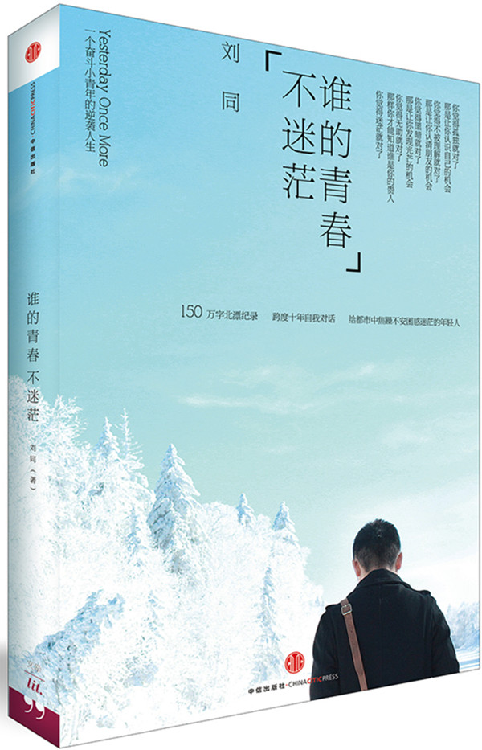
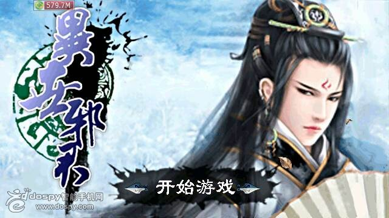

我的书单
- 青春励志类
*谁的青春不迷茫--刘同
我们的青春都一样，一样的迷茫，一样的在迷茫中努力寻找自己的方向
*你只是看起来很努力--李尚龙
任何没有计划的学习，都只是作秀而已；任何没有走心的努力，都只是看起来很努力。
- 实用技能类
*口才训练十五讲--孙海燕、刘伯荃
——口才是一个人智慧的反映，是影响一个人事业成功、人际和睦、生活幸福、精神愉快的重要素质
*计算机选配与维修实用教程--闵东 等人
——以最新的发展与应用为依托，通过新颖的思路与翔实的内容为大家讲述计算机软硬件基础知识
- 休闲玄幻类
*异世邪君--风凌天下
世间毁誉，世人冷眼，与我何干。我自淡然一笑； 以吾本性，快意恩仇，以吾本心，遨游世间，我命由我不由天。 一代牛人穿越异界，看其如何踏上异世巅峰，成为一代邪君
*大主宰--天蚕土豆
一个绝对阳光、真正自信的少年成长记
我的书评

&谁的青春不迷茫--刘同
所有正处于青春期的我们，从高中到大学，乃至以后从大学到社会，我们都会或多或少的发现，似乎身边的一切都发生了变化。很多曾经坚信的东西都被颠覆，很多曾经不相信的，却又赤裸裸的呈现在我们面前。我们开始害怕，开始退缩，但是我们又都清楚地知道，世界本来就是这个模样，不管我们高兴与否，都必须面对。所以，我们鼓足勇气，一步步向前进，在迷茫中摸索方向，在孤独中倔强成长。
，本书是作者刘同在20岁-30岁之间日记的选集，每一篇都记录着在人生关键的10年中，他生活中所面临的种种问题与迷茫以及他的自我解决之法。每一篇都质朴又真实，饱含着他对生活的虔诚。
每个人的青春都与其他人的不一样，但又如此的相似。从这本书中，我收获很多，原本生活中的许多迷茫都渐变成一种坚定。现在，我把它推荐给你们，希望你们也能有所收获！
（PS :推荐：《你的孤独 虽败犹荣》——《谁的青春不迷茫》系列书籍的另一本。两本书都认真去看，去品味，相信你生活中的迷茫会少一点）

&异世邪君--风凌天下
本书讲述了一个现代第一杀手穿越到异世界大陆，从平凡渺小到一步步走向世界巅峰的故事。作为玄幻类小说，不免写到主角各种奇遇，各种外挂，各种装逼…但是，通过主角，作者告诉我们怎样做一个人，一个男人、一个顶天立地的男人。也告诉我们怎样做我们自己，虽千万人阻挡，吾往矣。书中的主角，就像他自己所说，他不是一个君子，而是小人，一个真小人、一个真正的人。当然，书中有些观点可能偏颇，有些行为也可能过激。是否效仿，值得我们好好探究探究。总的来说，在所有我看过的同类型小说中，绝对算得上数一数二。如果哪一天，你想看看小说放松放松，看这本书绝对没错，更值得推荐的是，你可能从中获得意外的收获。